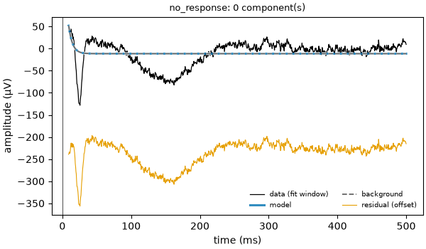
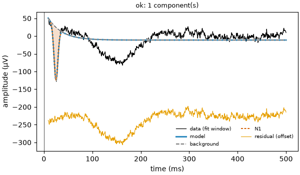
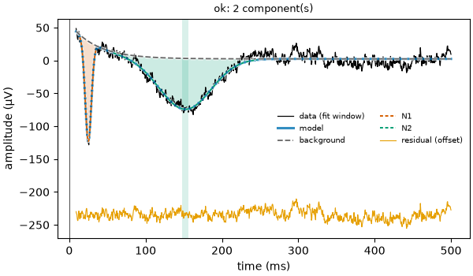

Note
Go to the end to download the full example code.
03: Fitting algorithm¶
What evoparam does, step by step, to turn a curve into a background and a few bumps.
Introduction¶
In tutorials 01 and 02, fit_response gave the answer in one call. Here we open the
box and follow the steps it takes. Knowing them helps to understand the settings
(tutorials 04 to 06) and to see why a fit sometimes goes wrong (tutorial 10).
The steps are:
measure the noise, on the part of the recording before the stimulus;
fit the background alone, with no bump;
look at what the model does not explain yet, put a new bump where the largest peak or trough left over is, and refit everything together;
keep the new bump only if it makes the model clearly better (BIC);
repeat steps 3 and 4 until no new bump helps, or the largest number allowed is reached;
name the bumps (N1, N2…) and measure them (latency, amplitude, width, uncertainty).
Note
Here we run the fit several times, each time allowing one more bump, to show each
step. This is only to look inside: in practice, one call to fit_response does
all of it.
# Import what we need
from evoparam import fit_response, gen_response, plot_fit
We use the curve of tutorial 01: a sharp bump at 25 ms (−150 µV) and a broad one at 150 ms (−80 µV), on a background that fades away (60 µV, fading in 30 ms), with noise of 8 µV.
# The example curve: [latency (ms), amplitude (µV), width (ms)]
times, signal = gen_response([[25, -150, 10], [150, -80, 80]], seed=3)
# The whole fit, in one call
fit = fit_response(times, signal, preset="ccep", random_state=0)
print(fit)
==================================================================
evoparam - RESPONSE MODEL
fit window: 9 to 500 ms
background: exponential, time constant 35.4 ms
2 component(s) found:
label latency amplitude width
N1 25.0 ms -152.1 µV 9.5 ms
N2 151.9 ms -77.4 µV 79.2 ms
fit quality: R2 = 0.94, noise level = 7.4 µV
(latency: time of the peak; width: full width at half maximum)
==================================================================
Step 1: the noise¶
Before the stimulus (from −500 to −20 ms here, the baseline), there is no response:
only noise. evoparam measures it there: how large it is (its standard deviation,
sigma) and how it is made (brain noise is slow: a point looks like its neighbours,
so evoparam also learns this rhythm).
The noise sets the scale for everything that follows: a bump is only worth keeping if it is clearly larger than what noise can make.
print(f"noise measured on the baseline: {fit.diagnostics['sigma']:.1f} µV (true value: 8 µV)")
noise measured on the baseline: 7.4 µV (true value: 8 µV)
Step 2: the background alone¶
The fit starts with the simplest model: the background alone, no bump. For the
"ccep" preset the background is an exponential: a jump that fades away (tutorial 05
is about the background).
max_components=0 stops the fit here, so that we can see this step.
step_0 = fit_response(times, signal, preset="ccep", max_components=0, random_state=0)
print(f"R² = {step_0.gof.r2:.2f}, BIC = {step_0.gof.bic:.0f}")
fig = plot_fit(step_0)

R² = 0.02, BIC = 756
The background alone explains almost nothing of the curve (R² = 0.02): the two dips are left in the residual (the orange line at the bottom, shifted down to be readable).
The BIC (Bayesian information criterion) scores the model: how far it is from the data, compared with the noise, plus a cost for every number the model uses. Lower is better. Here it is 756.
Step 3: add one bump¶
evoparam looks at what is left over (data minus model). It takes the largest peaks and
troughs there that stand above 2 times the noise (detection_threshold=2), tries a
new bump at each of them, and refits everything together: the background and all the
bumps move to fit best. The best of these tries is the candidate.
step_1 = fit_response(times, signal, preset="ccep", max_components=1, random_state=0)
print(f"R² = {step_1.gof.r2:.2f}, BIC = {step_1.gof.bic:.0f}")
fig = plot_fit(step_1)

R² = 0.27, BIC = 440
The first bump is the sharp N1 at 25 ms: it is the deepest trough of the curve. The BIC goes down from 756 to 440.
Step 4: keep it or not¶
A new bump always makes the model a little closer to the data, even if it only follows
noise. So evoparam keeps it only when the BIC goes down by at least delta (10 for
the "ccep" preset). Here it went down by 316: the N1 is kept.
Step 5: again, until no bump helps¶
The same is done again on what is left: a second bump is tried and kept if the BIC goes down by 10 or more.
step_2 = fit_response(times, signal, preset="ccep", max_components=2, random_state=0)
print(f"R² = {step_2.gof.r2:.2f}, BIC = {step_2.gof.bic:.0f}")
fig = plot_fit(step_2)

R² = 0.94, BIC = 34
The broad N2 at 150 ms is added: the BIC goes down from 440 to 34, and R² goes up to 0.94. The residual is now flat: only noise is left.
A third bump was tried too, on the largest wiggle of the noise. It would have lowered the BIC by only about 6, less than 10, so it was not kept and the fit stopped. The fit keeps the history of the BIC at each step, and by how much the best refused bump would have lowered it.
for step in fit.diagnostics["steps"]:
print(f"{step['K']} bump(s): BIC = {step['criterion']:.0f}")
print(f"best refused bump: lowers the BIC by {fit.diagnostics['best_rejected_delta']:.1f}")
0 bump(s): BIC = 754
1 bump(s): BIC = 440
2 bump(s): BIC = 35
best refused bump: lowers the BIC by 6.3
The values of the history (754, 440, 35) differ a little from those printed for the separate fits above (756, 440, 34): each separate fit starts again from scratch. What matters is how much the BIC goes down from one step to the next.
The search also stops when max_components bumps are reached (6 for "ccep"):
this limit is a safety, it never adds bumps that are not there.
Step 6: name and measure the bumps¶
When the search stops, evoparam:
names each bump by where and which way it goes: for
"ccep", a bump going down between 9 and 50 ms is the N1, between 50 and 300 ms the N2. A bump with no name gets a number (C1, C2…);measures each bump: latency (when it peaks), amplitude (its height from the background, not from zero), width at half height, onset and offset (where it reaches 10 % of its height);
gives each number an uncertainty: a range of 95 % around it, computed from the noise and from how sharply the fit depends on that number.
for bump in fit.components:
low, high = bump.ci["latency"]
print(
f"{bump.label}: latency {bump.latency_ms:.1f} ms "
f"(95 % range {1000 * low:.1f} to {1000 * high:.1f} ms), "
f"amplitude {bump.amplitude:.0f} µV, width {1000 * bump.fwhm:.0f} ms"
)
N1: latency 25.0 ms (95 % range 24.7 to 25.2 ms), amplitude -152 µV, width 10 ms
N2: latency 151.9 ms (95 % range 148.2 to 155.6 ms), amplitude -77 µV, width 79 ms
The sharp N1 is placed within a fraction of a ms; the broad N2 within a few ms. This is the same lesson as for trials (tutorial 09): a narrow, large bump is timed much more precisely than a broad, small one.
Conclusion¶
evoparam measures the noise, starts from the background alone, adds bumps one at a time
where the largest leftover is, refits everything at each step, and keeps a new bump only
when the BIC goes down by delta or more. Then it names and measures the bumps. The
next tutorials look at the settings of each part: the bumps (04), the background (05)
and the scores that judge the fit (06).
Total running time of the script: (0 minutes 0.979 seconds)